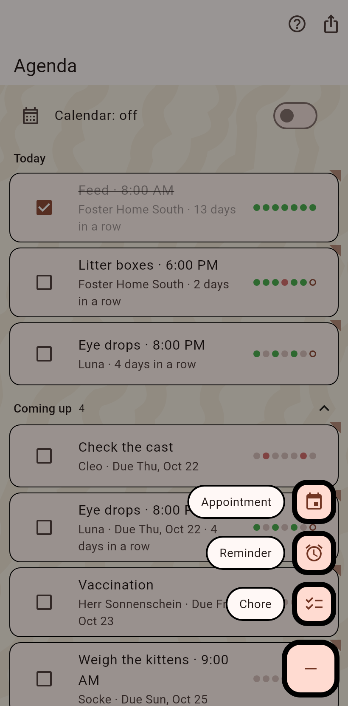
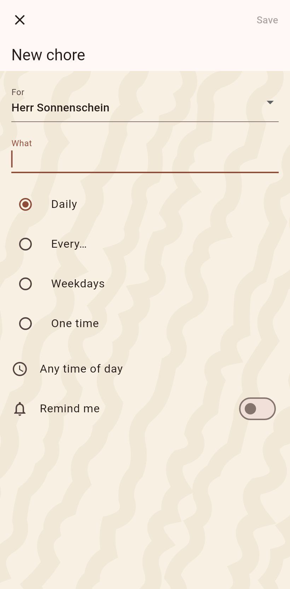

1. The agenda
Today's chores with their boxes and streaks, the appointments ahead. The plus at the bottom right adds.

2. The ways to add
The plus fans out: an appointment, a reminder, a chore.

3. The chore
For whom, what, and how often: daily, every so many days, on weekdays, or one time with a due date. A time of day and a reminder if you want one. Save.

4. Tick it
Back on the agenda the chore stands under Today. The box ticks it and answers with the paw; the dots show the last seven days.